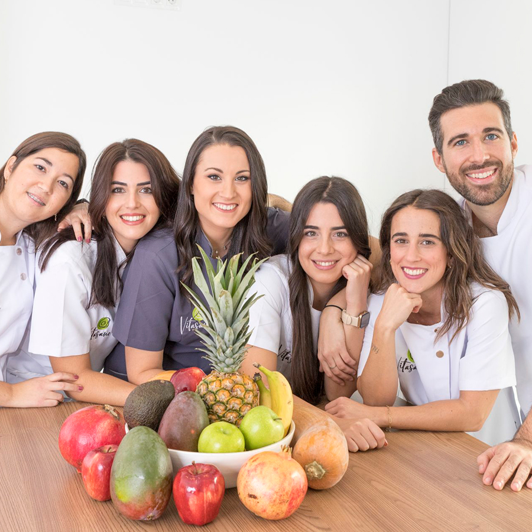
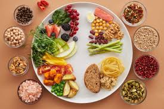

¿Quiénes somos?
Somos un equipo apasionado por la alimentación saludable y el bienestar integral. Creemos que comer bien no se trata de dietas extremas ni de prohibiciones, sino de aprender a elegir, escuchar al cuerpo y disfrutar el proceso.

Nuestro enfoque combina educación nutricional, hábitos sostenibles y acompañamiento real. No trabajamos con soluciones mágicas: trabajamos con personas, contextos y objetivos reales.
Nuestro enfoque
- Enfoque personalizado
- Hábitos sostenibles en el tiempo
- Educación antes que restricción
- Acompañamiento humano y cercano
Nuestro propósito
Detrás de este proyecto hay personas que creen en el cambio gradual, en el aprendizaje continuo y en el impacto positivo que una buena alimentación puede generar en la vida diaria.
Este proyecto nace de la experiencia, el estudio y, sobre todo, de haber recorrido este camino en primera persona.
Comer mejor es una decisión diaria, y no tenés que hacerlo solo. Te acompañamos a dar el primer paso.
